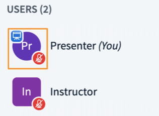
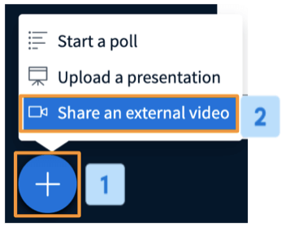
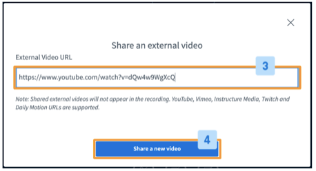
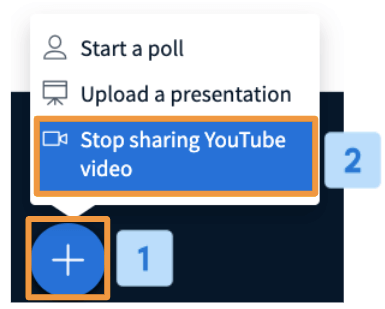

The recommended browsers are:
The following settings are recommended for all users connecting to Live Class from a mobile device:
Moderators and presenters can join Live Class using a mobile device, however, use of more bandwidth intensive features such as the screen sharing may be limited.
We recommend Moderators and Presenters connect from a desktop or laptop device whenever possible to ensure all features and functions available in Live Class are accessible to the user.
IMPORTANT: at this time screen sharing is not supported from mobile devices. Presenters who wish to use the screen sharing function should use a laptop, desktop, or Chromebook device.
For screen sharing, we recommend using FireFox, Chrome or Edge for the best results.
Screen sharing uses more bandwidth than sharing a webcam. To broadcast screen sharing takes about 1 Mbits/sec of upstream bandwidth. Therefore, for the current presenter -- such as when a viewer (student) is made presenter by a moderator -- we recommend the presenter have upstream bandwidth of at least 2 Mbits/sec.
We recommend moderators or presenters connect through a wired network (not wireless) if possible. If connecting from a wireless network that is not reliable, you may experience periodic disconnects or gaps in your audio.
You can join a class with the link provided to you by your coach/teacher. You can join from your mobile, tablet or computer.
If someone invites you to a meeting you can join as a participant without creating an account. A KidsChaupal account is required if you need to create your own classes/meetings and add participants.
The link can work on smartphones, tablets as well as laptops.
You can join a class by clicking on the class link provided to you by your host or going to live.kidschaupal.com and entering the meeting ID.
While it is not necessary to have a webcam to join a class on KidsChaupal, you will not be able to broadcast videos of yourself. You can however use the audio feature to listen and speak to others.
You can download the KidsChaupal Partner App and fill in all your details. Information provided here: Download app
In the Live Class feature option you can generate the link for your online classes. You can then share this link with your students.
For hosting a webinar you need to first download the KidsChaupal App. Once downloaded, you need to fill in all your class/organization details. When it’s time to start your webinar you can start it by clicking the ‘Live Class’ option integrated in the KidsChaupal App.
You can invite others to join your meeting/class by copying the join URL or meeting invitation and sending it via KidsChaupal App/ message or email.
Share screen feature allows teachers to share their screens in real time while delivering a live online class. Click on the share your screen icon on the bottom right side to start screen sharing.
You can share your presentations with your students by selecting Upload a presentation in the drop down menu by clicking on the Add button on the left hand corner of the screen. An option opens where you need to select the presentation file and upload it, after which you can share it with everyone in your class.
Click on the Add button- A dropdown menu appears- click on share an external video- Add your external video link.
You will need to ask you students the polling question.
Click on Polling option- Choose from standard options or create your customised answers- Start poll.
Once your poll starts it will appear on the screens of all members who are present in your class.
All KidsChaupal users can record their live class sessions. For that you need to press Record button on the top of your screen and start recording.
Your class recordings will be visible in your profile on the KidsChaupal App.
You can use the Shared Notes Tab on the left hand side to share any kind of notes with all your students in the class.
From the main page drop down menu, click on slide 2- the whiteboard option opens. On the right hand side there are the different tools that you can use for the whiteboard.
You can now share your whiteboard feature with multi-users. Click on the turn multi-user whiteboard option on the right hand side.
You can now provide assignments to students by dividing them into various groups and then have a discussion with each group separately. You can divide students and add them in separate Breakout rooms.
In Live Class, we use the built-in acoustic echo cancellation, so in most cases, you should not hear any echo from remote users. In any event, we always recommend that you have your remote users use a headset with microphone. This will ensure the best audio in a session.
If a remote user is using a laptop with a built-in microphone, you should not hear an echo. However, if two remote users are using laptops with built-in microphones and neither is using a headset and both are sitting close to each other (close enough for the microphone in one laptop to pick up the audio from the speakers in the other laptop), then you will hear an echo. The reason is the built-in echo cancellation only works with the audio coming from the host laptop – the audio coming from the second laptop will be picked up as an external audio source. If a student is causing echo, the best way to solve this problem, if you are logged in as a moderator, is to mute the user by clicking the microphone icon to the left of their name. Overall, the best solution is to ask all users to use a headset – this will ensure no background noise or echo.
We recommend hosting sessions of 50 users (or less).
This is not hard-coded, you can have 51, 52, etc. The more users in the session, in general the slower the updates will occur in the Live Class interface.
If you are going to host a large session, we recommend only one person (the presenter) share their webcam. If possible, upload the presentation as PDF and share the slides (as opposed to using screen sharing).
Overall, for best performance, we recommend 50 users or less.
Live Class is not designed as a purely video conferencing application, but rather it focuses on engagement with students (breakout rooms, shared notes, multi-user whiteboard, etc.).
You can share webcams in Live Class In terms of guidelines, we recommend keeping the overall number of streams under 200.
Good examples:
Not good examples:
Right now, there are no hard-coded limits in the webcam sharing, but the above guidelines will ensure you and your students have a good experience.
The best way to share a YouTube, Vimeo, or Canvas Studio video is through the built-in Share external video option.
However, if you want to use screen sharing to share a video (start screen sharing and then play the video on your screen outside of Live Class), then we recommend using Mac OS X and the Chrome browser.
When you share your screen using Mac OS X + Chrome, viewers will also hear the audio from the video
However, if you try the same on Windows, the audio will not come through. Students will see the video through screen sharing, but will not hear any audio.
Share an External Video Link
A presenter in Live Class has the ability to share an external video with users in the live session.
The presenter role enables the assigned user the ability to share and control the video playback from an external video.
YouTube, Vimeo, Instructure Media, Twitch and Daily Motion URLs are supported links.
It is important to note that the video playback will not appear in the processed recordings.
By default, the first Moderator to enter the Live Class session is allocated the presenter role capabilities; if you are a viewer you will need to request presenter status from the moderator.

When a user has the presenter role, the presenter icon will appear over their avatar in the users list.

Select the Actions menu [1] in the lower left hand corner of the presentation window, then choose Share YouTube video [2].

Copy and paste an unlisted or public YouTube link into the Video URL [3] field and select Share a new video [4] to begin sharing.
The video playback will appear to all users of the session in the presentation area of the Live Class interface; you can pause and skip through the playback.
It is important to note that some mobile device browsers have auto playback of media turned off and the user will have to select play to engage the video playback.
Audio from the video will play on each users' local system - no need to share an open audio source!
To Stop Sharing

Select the Actions menu [1] in the lower left hand corner of the presentation window, then choose Stop sharing video [2].
The previously displayed content will display in the presentation area.
On mobile app, you can click Join button again to join the meeting. If you are already on desktop/mobile browser with joining session URL, you need to just refresh the browser.
You can adjust the ratio of webcams to presentation area (which may also be showing a screen sharing).
To adjust, hover your cursor over the top of the presentation area/under the webcam(s) displayed until a resize icon appears.
Drag the cursor down to enlarge the webcam(s)/reduce the presentation area.
Don't find answers to your queries, write to us at